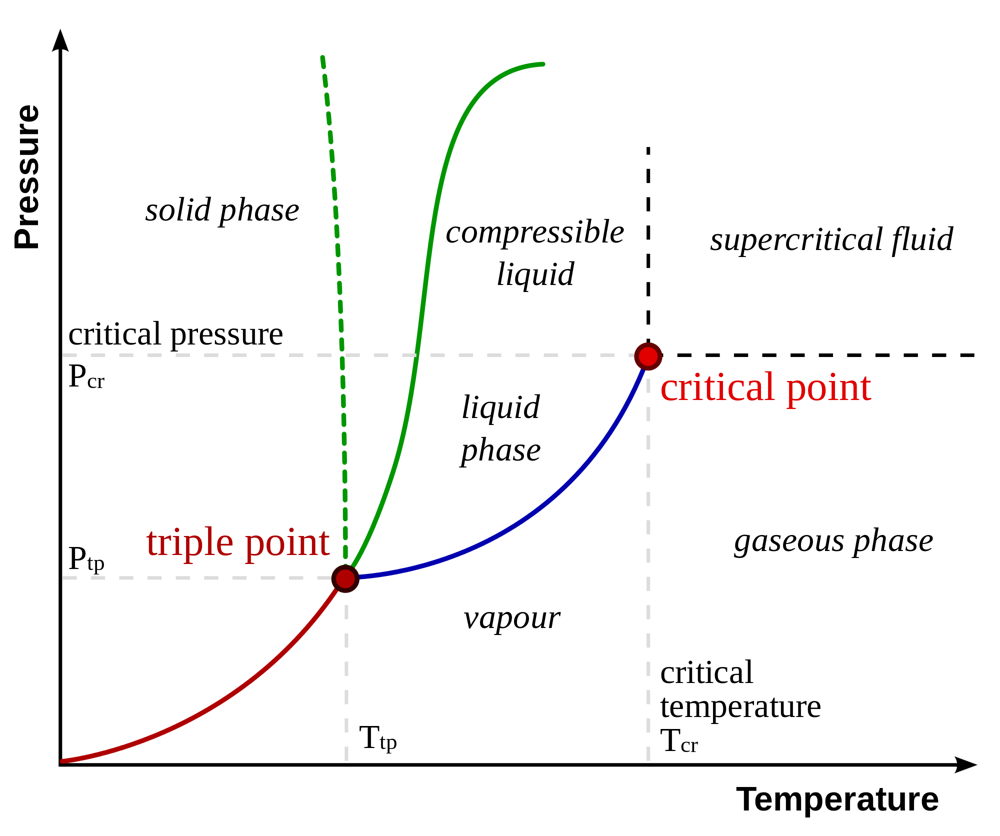
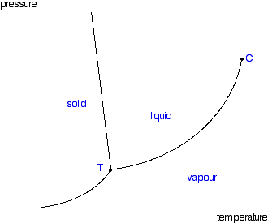
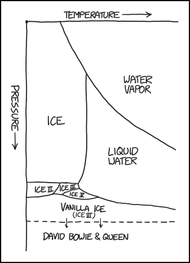
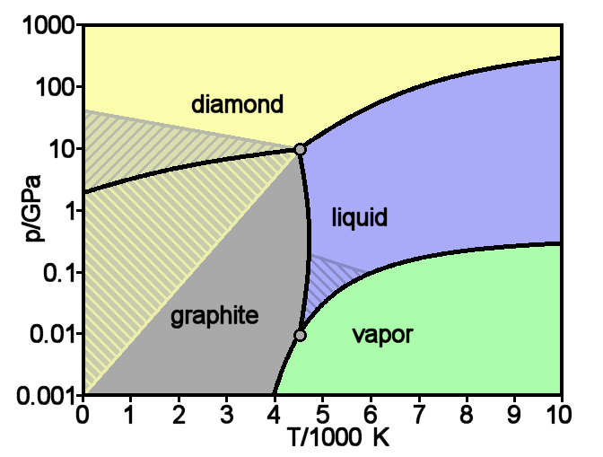

We mentioned earlier that phase depend on both temperature and pressure. The information involving the phases of a chemical is contained in the phase diagram of the chemical. Here's the phase diagram of benzene:
Phase diagrams are diagrams that tell us the phase of a chemical at any given pressure and temperature.
Let's practice by reading the benzene phase diagram. First, we're going to hold pressure constant at `40 "torr"` while increasing the temperature. Put your cursor on the y-axis at `40 "torr"`. Benzene is a solid at this point. Slowly move your cursor to the right; this is equivalent to increasing the temperature. At approximately `5°C`, the benzene crosses from the solid region to the liquid region. This corresponds to melting. Continue moving your cursor to the right. At approximately `9°C`, the liquid benzene vaporizes and becomes gaseous benzene.
Now let's try increasing the pressure while holding temperature constant. Place your cursor at `9°C` and move upwards. At almost `40 "torr"`, the gaseous benzene condenses and becomes liquid benzene. Notice that if you continue compressing, nothing happens to the phase: the liquid benzene will remain a liquid.
Does any of this surprise you? We know that changes in energy cause changes in state. Thus, heating up a solid is likely to cause it to liquefy and eventually vaporize. Likewise, compressing a gas under significant pressure is going to cause the gas molecules to coalesce to form liquid molecules. Phase diagrams should be very intuitive for the most part.
There are a couple regions on a phase diagram that we should pay attention to.

The temperature corresponding to the solid-liquid intersection is the melting temperature of the substance at that pressure. Notice that, as you change the pressure, the melting temperature changes alongside it. Likewise, the liquid-gas intersection is the boiling temperature of the substance.
The point in which all three curves intersect is called the triple point. This is the pressure and temperature that will result in all three states exist in equilbrium. Here's a cool .gif of benzene at its triple point:

At temperatures above the critical temperature, the gas of a substance cannot be liquefied regardless or how much pressure is used. Similarly, the critical pressure is the pressure that is necessary to liquefy a gas at its critical temperature. Together, they form the critical point.
Notice that, after the critical point, there is no curve between the liquid and gas phases. Any substance past its critical point is a supercritical fluid. Supercritical fluids have both properties of liquids and gases while being neither one.

Check out the water phase diagram at low temperature and pressure. If you keep the pressure constant and slowly increase the temperature, what happens? It may seem unintuitive, but what occurs is called sublimation: the solid bypasses the liquid phase and changes directly into a gas. Here's a pretty cool video showing the sublimation of solid carbon dioxide, also known as dry ice:
Reading phase diagrams is simply a matter of knowing how to read graphs and understanding what the triple and critical points represent. Water is a bit of an oddity with regards to phase diagrams, however.
If you look at the earlier phase diagrams, the curve between the solid and liquid phase is either straight up or towards the right. For water, the solid-liquid curve is slanted to the left. This is unique to water and is due to the fact that liquid water is more dense than solid water. Due to this leftward slanting interface, water is able to melt simply by applying pressure. Other substances require heat to melt.
To conclude, here's a fun comic, courtesy of XKCD. Do note that this is not a real phase diagram of water.

1. The state of matter of a substance is dependent on both temperature and pressure.
2. The phase diagram of a substance tells us the phase of the substance at a specific temperature and pressure.
3. The triple point of a substance is where the solid, liquid, and gas lines intersect. At the triple point, all three states exist in chemical equilibrium.
4. The critical temperature of a substance is the temperature at which the gaseous substance cannot be liquefied. The critical pressure is the pressure corresponding to the critical temperature. Both combined are called the critical point.
5. A substance past its critical point is a supercritical fluid.
6. The solid-liquid curve of water is slanted to the left whereas most substances have the curve slanted to the right.
1. Temperatures above the boiling point and below the melting point.
Is it possible to have liquid water at a temperature above its boiling point? The answer, surprisingly, is no.
Once a substance is heated up to its boiling point, it remains at that temperature. Any excess heat is used towards boiling/vaporizing the substance. Thus, at the standard pressure, the temperature of liquid water cannot be any higher than `100°C`. Isn't that cool?
One of my chemistry professors tells a story about how he was dismissed from a jury due to his insistence on this fact. The lawyer in the case was alluding to the famous McDonald's coffee lawsuit where a woman suffered from serious burns due to the unnecessarily high temperature of the coffee served. In allusion to the case, the lawyer claimed that "the coffee wasn't just boiling, it was hotter than boiling!" My professor, not wanting to have a scientifically misinformed jury, stood up and corrected the lawyer. My professor was promptly dismissed.
2. Superheating and Supercooling
Actually, it turns out that temperatures above the boiling point can be reached in rare circumstances. Superheating is a phenomena where a substance reaches a higher temperature than its boiling point without boiling.
You may have witnessed this phenomena before if you've ever heated water in the microwave. If not, you're in luck - witnessing it usually comes with the cost of burning yourself.
Superheating of water usually occurs when water is placed in a smooth container and heated past its boiling point. In order for water to boil, it helps to already have water bubbles present because the formation of water bubbles requires energy. In smooth containers, bubbles are not present and thus extra energy must be used to create the bubbles. This is why the water can be heated above its boiling point: the water in a smooth container doesn't have enough energy to form a starting bubble which would normally begin the process of boiling. Once the water is disturbed by movement or something being dropped into it, air bubbles are introduced into the water which makes it instantly boiled, causing the water to "explode."

Supercooling is the same phenomena, but with freezing. In order for a substance to freeze, there has to be a site of nucleation, a small impurity in which the initial ice can form on and grow. In very pure water, there may be no site of nucleation and thus the water will be at a temperature below its freezing point. You may have witnessed this with frozen sports drinks: if you've ever taken a drink out of the fridge only for it to instantly freeze or turn to slush, you were dealing with a supercooled liquid. If you haven't witnessed this, there's a .gif of this above.
Isn't that super cool?!
3. Supercritical Fluids in space
It is currently believed that there is a planet, 55 Cancri e, that theoretically has approximately `1/5` of its mass composed of supercritical fluid due to the planet's combination of high temperature and pressure. Doesn't that make you wonder what life would be like on that planet?!
4. Diamonds from Peanut Butter
Diamond is one of the solid forms of carbon.
The precious gemstone diamond and the lead in your pencil are primarily the same elements, but with two different structures! Diamond is in a diamond crystal structure (FCC with carbon in the tetrahedral sites), while graphite is in planar sheets.
Carbon is in a huge amount of compounds, from carbon dioxide in the air to the food we eat, carbon is ubiquitous. As such, peanut butter is one of the compounds that contains carbon. By compressing peanut butter at extremely high temperatures and pressure, we can actually create synthetic diamonds!
While I'm on the subject, diamonds aren't actually that rare. The only reason diamonds are pricey are due to monopolization and advertisement. That's a subject for a later post, however.